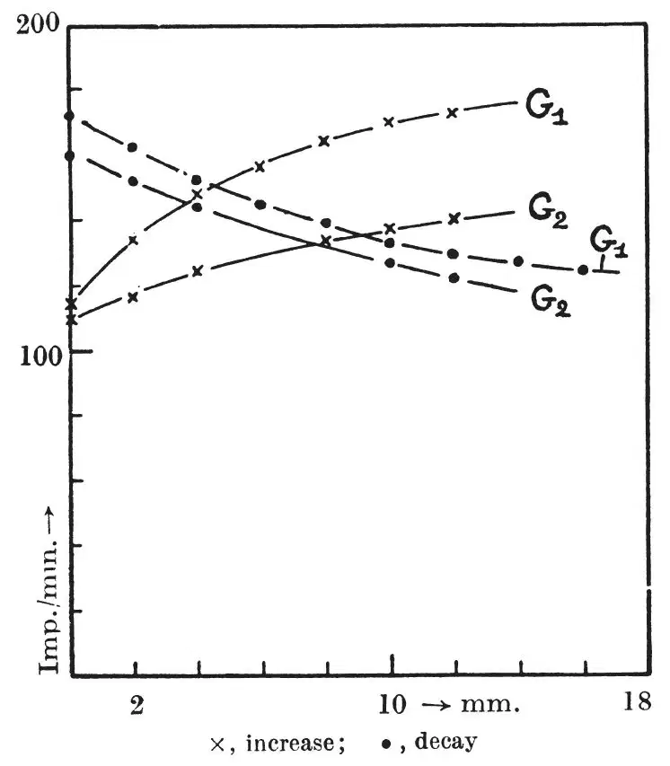
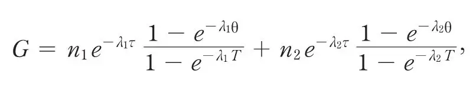
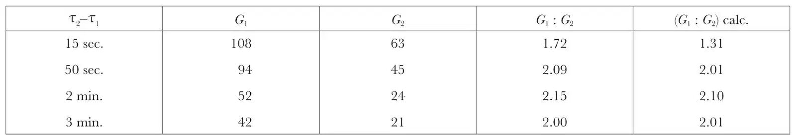

中文
中文L. Wertenstein
Editor’s Note
The discovery of nuclear fission and its release of enormous energy posed the possibility of putting that energy to use, either in weapons or in industry. But scientists still knew very little of many fundamental processes which might influence its successful engineering. Here physicist Ludwik Wertenstein, writing from a Poland recently occupied by Nazi Germany, reports that the fission process produces radioactive gases. He had detected the radioactivity induced into several gases circulating about a sample of uranium bombarded by neutrons, and found traces of essentially two distinct radioactive components, with half-lives of about 30 seconds and four minutes. This was merely the beginning of detailed investigation required to bring nuclear energy into engineering practice. 中文
IN this letter, a brief account is given of the preliminary results of an investigation of the radioactive gases evolved in the fission of uranium nuclei. This investigation was commenced this summer but was interrupted by the outbreak of the War. Even if the results so far obtained are not more complete than those obtained in the meantime by other investigators1, it may still be of interest to describe the method employed, which follows somewhat different lines. 中文
The radioactive gases evolved in the fission process were carried by a circulating stream of an inactive gas through two Geiger-Müller counters placed in succession. The time lag of the arrival of the gas in the two counters could be varied within wide limits by means of a system of capillary glass tubes of various bores placed in parallel and fitted with stopcocks. The magnitude of the lag was ascertained by separate experiments in which actinon or thoron was circulated. As a carrier gas, acetone vapour at a pressure of 10 mm. mercury was used because of its favourable properties for the working of the counters. The circulation was kept up by means of a Vollmer glass pump. 中文
The uranium vessel, containing about 30 gm. of uranium oxide (U2O3), was surrounded by paraffin and provided with a well to allow introduction or removal of the neutron source, which consisted of about 30 mgm. of radon + beryllium. In the experiments, the counting rate of both counters was recorded for a period of time immediately following the commencement or cessation of irradiation. Typical results, using a time lag between the counters of 15 sec., are shown in the accompanying figure, from which it may be seen that the curves obtained for increase and for decay are almost complementary, and indicate several periods, of which some are of the order of a minute, while others are evidently much longer, giving rise to a residual activity almost constant within the time of the experiment. 中文

The shorter periods were estimated from a decay curve obtained in a separate experiment, in which the flow of gas was stopped at the same time that the source was removed, and the records of the two counters at any subsequent time simply added. This gave two periods of about 30 sec. and 4 min., the ratio between the rates of production of the corresponding gases being estimated as 1.82. (Glasoe and Steigman (loc. cit.) find two gaseous products of uranium fission of periods 30 sec. and 5 min., of which the first transforms into a product of 3 min. period. It is possible that the period of 4 min. found in our experiments results from a combination of the periods 3 min. and 5 min.) 中文
A test of these estimates was further obtained by calculating from them the values of the ratio between the counting rates of the two counters for steady flow with the various circulating periods obtained by inserting different capillary tubes in the circuit, and comparing the calculated values with the values measured 12 min. after the beginning of the irradiation. This interval of time is not quite sufficient for complete equilibrium to be established, but, on the other hand, it is sufficiently short compared to the periods of the long-lived transformation products to ensure that the values obtained do not depend on the formation of these products to any appreciable extent. 中文
Assuming that the radioactive gas consists only of the two short-period components of decay constants λ1, λ2 produced at the rate of n1, n2 atoms per sec., the counting rate in any of the counters can readily be shown to be given by

where τ is the time taken by the circulating gas to travel from the uranium container to the counter in question, θ the time taken by the gas to flow through the counter, and T the period of the whole circulation process. 中文
In the table are recorded the counting rates, G1, G2, for the two counters measured 12 min. after the beginning of the irradiation for four capillary tubes corresponding to values of the time lag τ2–τ1 between the counters stated in the first column. 中文

The agreement between the experimental and calculated values for the ratio G1 : G2 is seen to be very good except for the fastest circulation, for which the calculated value depends mostly on the shorter period and on the short time-lag, the determinations of which are the least precise. 中文
(144, 1045-1046; 1939)
L. Wertenstein: Miroslaw Kernbaum Radiological Laboratory, Warsaw Society of Sciences, At Turczynck, near Warsaw, Sept. 24.
Reference:
1. Hahn, O., Strassmann, F., Naturwiss., 27, 163 (1939). Heyn F., Aten, A., and Bakker, C., Nature, 143, 516 and 679 (1939). Glasoe and Steigman, Phys. Rev., 55, 982 (1939).